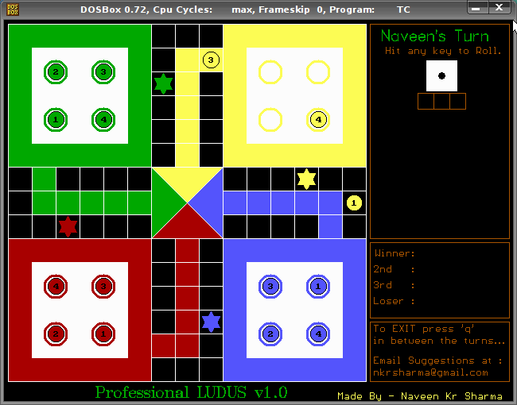
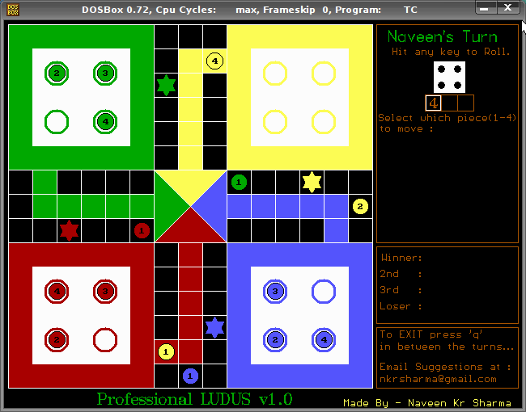
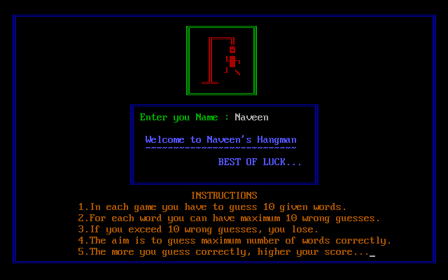
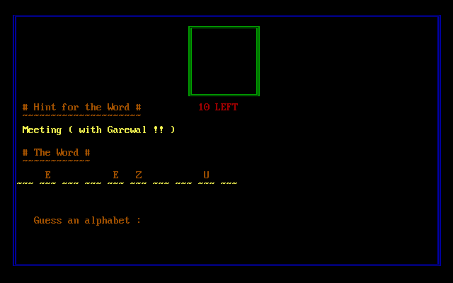

This page has a random collection of things I've built or collected over the years.
Mini Projects
- A 16-bit RISC CPU on an FPGA - (Autumn 2009)
Instructor: Prof. D. Sarkar, Computer Organisation & Architecture
-- Design Document & Report
-- Verilog Source Codes : Datapath, Controller, Memory, Interrupt Handler. (Download Archive)
- Compiler for a subset of C language - (Autumn 2009)
Instructor: Prof. Goutam Biswas, Compiler Design
The language is a highly simplified version of C language. Some
features have been removed or tweaked in order to help the
implementation. The final target code is generated for Intel
XEON x86-36, assembly language.
-- The language specification in context free grammar.
(Grammar.txt)
-- The lexical analyser, written using flex.
(compiler.l)
-- The parsing code, written in Bison.
(compiler.y)
-- The Makefile, and some
sample programs
- Fortune's algorithm with O(nlogn) complexity
for voronoi diagrams - (Autumn 2008)
Instructor: Prof. Partha Bhowmick, Algorithms 1 -
Report -
Source Files
- Ludo & Hangman in Turbo C++ - (circa December 2005)
-- This was my first attempt at writing some big piece of code. At
school, we were taught in Turbo C and had no idea about
graphics libraries. Me and my partner decided to make this game
using Turbo's primitive graphics commands in DOS. This was special
because I used to bunk my classes and stay in the computer lab to
complete it.
-- The LUDO Code,
Hangman Code.
Now I run these using DOSBOX.




Quotations
- I don't believe in weakness... it costs too much. -- Lyman Zerga
- Education is an admirable thing. But it is well to remember
from time to time that nothing that is worth knowing can be
taught. -- Oscar Wilde
- Why should a financial engineer be paid 4-100 times more than
a real engineer? A real engineer builds bridges - a financial
engineer builds dreams and when these dreams turn out to be
nightmares other people pay for it. -- Andrew Sheng (Chief Advisor
China Banking Regulatory Commission)
- A quotation is to speech what salt is to food. -- Arabic Proverb
- Nearly every man who develops an idea works at it up to the
point where it looks impossible, and then gets discouraged. That's
not the place to become discouraged. -- Thomas Edison
- Religions die when they are proved to be true. Science is the
record of dead religions. -- Oscar Wilde
- There is only one pretty child in the world... and every
mother has it. -- Chinese Proverb
- Debugging is twice as hard as writing the code in the first
place. Therefore, if you write the code as cleverly as possible,
you are, by definition, not smart enough to debug it. -- Brian
Kernighan
- A common mistake that people make when trying to design
something completely foolproof was to underestimate the ingenuity
of complete fools. -- Douglas Adams
- Its not always that you get to hit the iron when it's hot; I
believe in hitting it so hard that it gets hot!! -- Anonymous
- People who count their chickens before they are hatched, act
very wisely, because chickens run about so absurdly that it is
impossible to count them accurately. -- Oscar Wilde
- Winning is like a drug, I cannot justify in any circumstances
coming second or third, because being second is to be the first of
the ones who lose. -- Ayrton Senna
- Programming today is a race between software engineers
striving to build bigger and better idiot-proof programs, and the
Universe trying to produce bigger and better idiots. So far, the
Universe is winning. -- Unknown

{kind=link}
{kind=link}
{kind=link}
{kind=link}